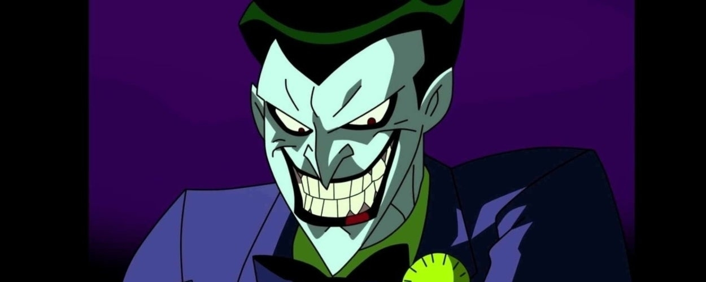

About The Joker
What can we say about the Joker? Let's just say he's full of surprises. You'll always be entertained by his antics and schemes around Gotham City. This DC supervillain is the archenemy of Batman. His clownlike apperance and sick humour constantly leaves you guessing.
Look at that smile! Image Credit to Comicbook.com
"If I weren't crazy, I'd be insane."
Characteristics
- Psychotic
- Demented
- Humorous
- Cunning
- Moody
The Joker's Friends (If you'd call them that!)
The Joker has some "interesting" relationships with a few characters. Click on the links below to learn more about them.